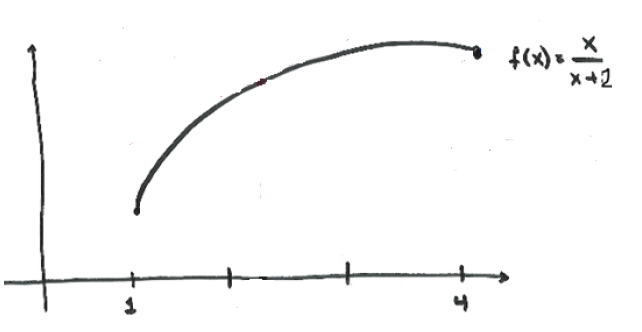
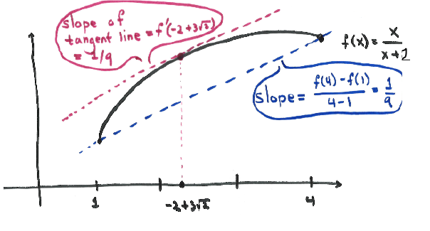

\[ f(x) = \frac {x}{x+2} \qquad \text {on } [1,4] \]
. 
The function \(f(x) = \frac {x}{x+2}\) is continuous on \([1,4]\) and differentiable on \((1,4)\) since it is a
rational function, and is therefore continuous and differentiable on its domain.
Therefore, \(f\) satisfies the hypotheses of the Mean Value Theorem. We have
that
\[ f'(x) = \frac {(x+2)(1) - x(1)}{(x+2)^2} = \frac {2}{(x+2)^2} \]
\[ \frac {f(4) - f(1)}{4-1} = \frac {\frac {2}{3} - \frac {1}{3}}{3} = \frac {1}{9} \]
So we are looking to find all points \(c \in (1,4)\) which satisfy that \( f'(c) = \frac {1}{9} \). So we solve:
\[ \frac {2}{(c+2)^2} = \frac {1}{9} \]
\[ (c+2)^2 = 18 \]
\[ c = \sqrt {18} - 2 = 3\sqrt {2} - 2 \]
Note that we omitted \(-\sqrt {18} - 2\) above because it is not in the interval \((1,4)\). Therefore, \(c = 3\sqrt {2} - 2\). 